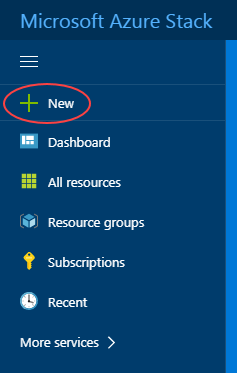
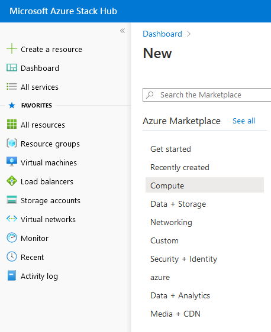
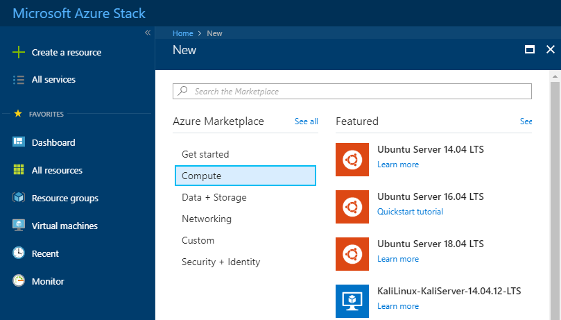
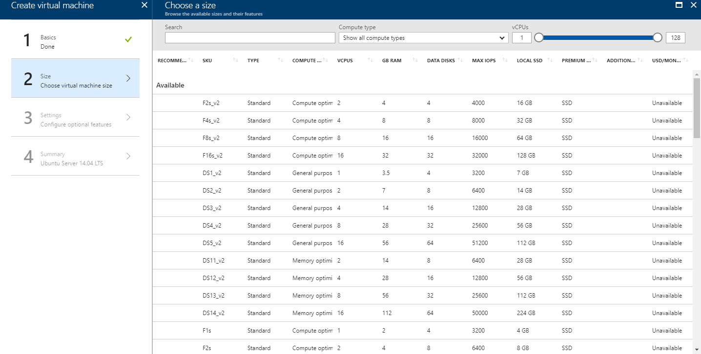
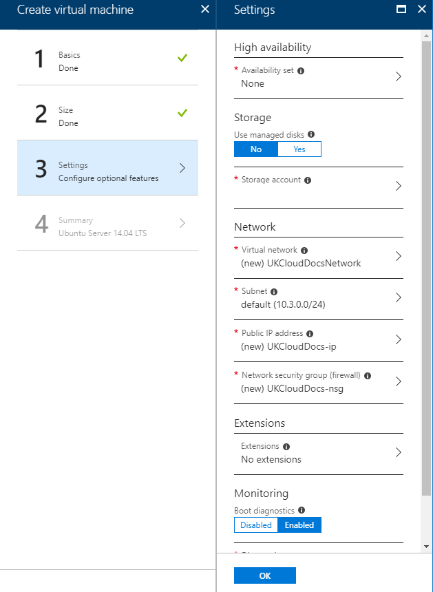
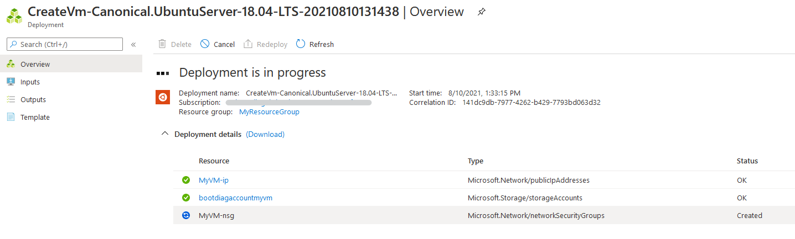
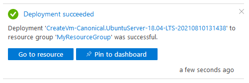
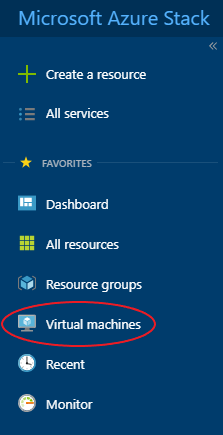
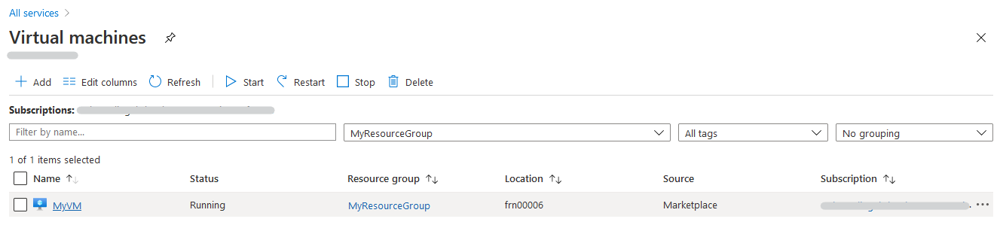

How to create a virtual machine using the Azure Stack portal
Overview
With UKCloud for Microsoft Azure, you can leverage the power of Microsoft Azure to create virtual machines (VMs) for your on-premises applications. As UKCloud for Microsoft Azure is built on UKCloud’s assured, UK-sovereign multi-cloud platform, those applications can work alongside other cloud platforms, such as Oracle, VMware and OpenStack, and benefit from native connectivity to non-cloud workloads in Crown Hosting and government community networks, including PSN, HSCN and RLI.
Intended audience
To complete the steps in this guide, you must have appropriate access to a subscription in the UKCloud Azure Stack portal.
Creating a virtual machine
VMs provide the basic compute building blocks in Azure Stack. You can create VMs using the Azure Stack Marketplace, which provides access to pre-created images to quickly deploy the VMs you need to build your applications. Microsoft makes Azure Marketplace images available for Azure Stack once they have passed an accreditation process. If you cannot find the image you require in the Azure Stack Marketplace please raise a support call via the UKCloud portal and if possible we will make your requested image available in Azure Stack Marketplace.
To create a VM from the Azure Marketplace:
Log in to the UKCloud Azure Stack portal.
For more detailed instructions, see the Getting Started Guide for UKCloud for Microsoft Azure.
In the favourites panel, select Create a resource.

In the New blade, select Compute.

In the Compute blade, select the template that you want to use for your VM.

In the Create virtual machine blade, in the Basics step, enter general information about the VM, including a name, credentials and resource group, then click OK.

In the Size step, select the appropriate size for your VM, depending on its purpose, then click Select.
For information about the different available VM sizes, see https://docs.microsoft.com/en-gb/azure/azure-stack/user/azure-stack-vm-sizes

In the Settings step, change any of the optional settings as required for your VM, then click OK.

In the Summary step, review the selections you've made and then click OK to start the deployment.
You can monitor the progress of your VM's deployment by clicking the Notifications icon.

Click the deployment notification for the deployment to view details of the deployment of the VM and its resources.

When the deployment is finished, the notification will change to Deployment succeeded.

After your VM has deployed, you can view it by clicking Virtual machines in the favourites panel.

Select your VM from the list.

In the blade for your VM, you can view and monitor the VM, change its settings and perform diagnostics and troubleshooting.

Next steps
For more information about UKCloud for Microsoft Azure, see:
- Understanding UKCloud for Microsoft Azure
- Getting Started Guide for UKCloud for Microsoft Azure
- UKCloud for Microsoft Azure FAQs
Feedback
If you have any comments on this article, or any other aspect of your UKCloud experience, send them to products@ukcloud.com.